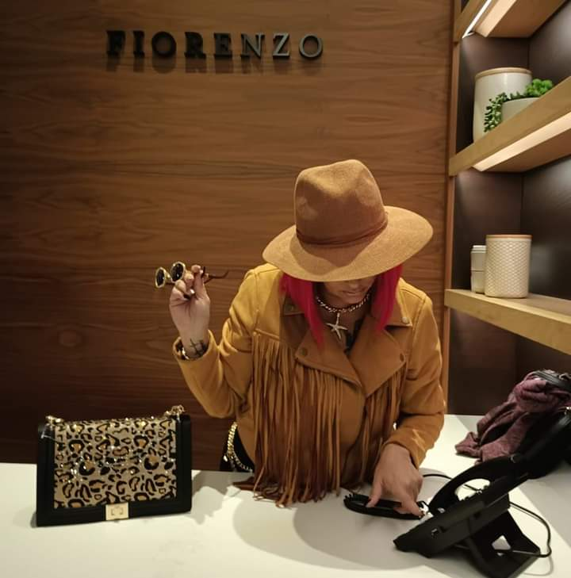

A World, Not a Website.
Welcome to the official world of Tez Da Queen — a living, breathing archive of experience, perspective, and divine timing.
This is a portal.
A space that exists intentionally.
Some things are meant to be shared.
Some things are meant to be accessed.
Bold. Magnetic. Ever Evolving.
Tez Da Queen is not a brand built on trends — she is a presence shaped by lived experience, intuition, and ancestral knowledge.
This world documents travel, fashion, business, spirituality, natural remedies, herbalism, and the people, places, and ideas that pass through her orbit.
Tez is also an Herbalist, rooted in plant intelligence, holistic healing, and natural remedies passed through experience and study.
You didn’t arrive here by accident.
Divine timing brought you.
This world is intentional.
So is the energy required to enter it.
An energetic exchange to unlock a private, evolving space.
I am also an Herbalist — honoring plant medicine, natural remedies, and holistic practices as tools for healing, balance, and self-reclamation.
I am Tez Da Queen.
A divine being walking in her purpose.
Unorthodox by nature. Grounded in intuition. Moving in divine timing.
I was raised in Merritt Island, Florida, but shaped by a lifetime of traveling the world.
A travel show.
Fashion features and personal style archives.
Business spotlights and collaborations.
Deeper spiritual conversations.
Built as I go.
In alignment.
In truth.
This world is not for everyone.
But if you feel pulled, it’s because you’re meant to be here.
Tez Da Queen — Ever Evolving